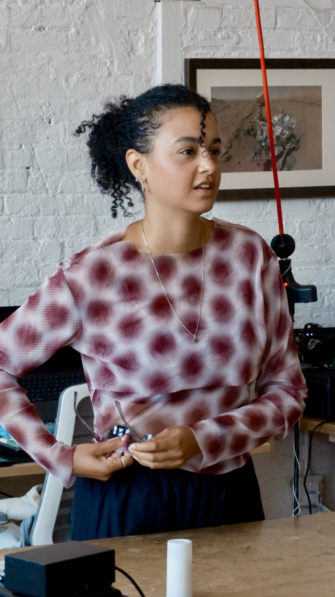

Hi, I'm Sophie
I'm a systems thinker who builds calm infrastructure behind fast-moving teams.
I've launched 0→1 products at a venture studio, advised 120+ founders at Techstars, and streamlined ops at an early-stage VC. I believe the best work disappears into the background — quietly keeping teams unblocked.
Currently at 2389 Research, exploring what idea validation looks like when anyone can ship a product in a weekend. Right now I'm building Idea Validator, an AI-powered market research tool.